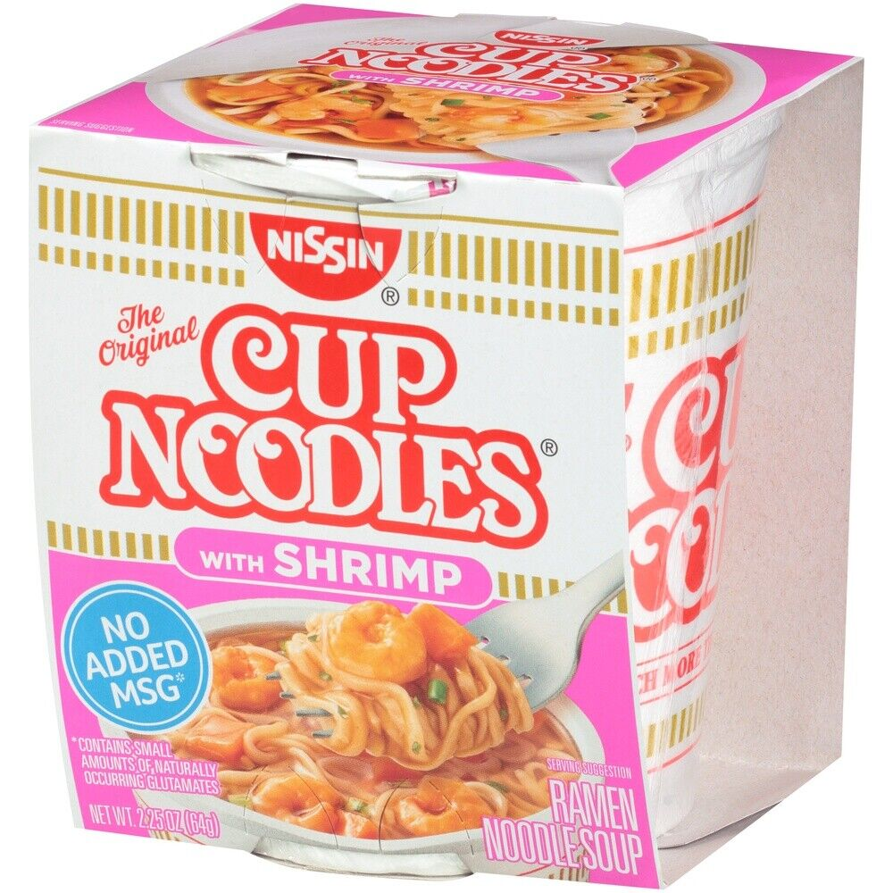

Cup Noodles

There is the basic way to eat a Cup Noodles and then there is the stacked way on how to eat a Cup Noodles. I will be showing you how
i eat my cup noodles
Ingredients
- Cup Noodles
- ES Cheese
- Tapatio
- Lime
- 2 eggs
- Smoke Suasage
Steps
- Boil 1 cup Water
- Wash your eggs and throw them in the boiling water. We want to clean the outer shell
- Once boil dump it into your cup of noodels
- Add all you ingredients
- Enjoy
Return to main page